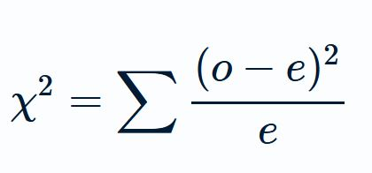

Chapter 9 Test de chi cuadrado de Pearson para la independencia de las variables categóricas
La prueba de independencia de chi-cuadrado se utiliza para analizar una tabla de frecuencias (o tabla de contingencia) formada por dos variables categóricas (sin importar cuantos niveles tengan (pueden ser dictómicas por ejemplo). La prueba evalúa si existe una asociación significativa entre las distribución de frecuncias de las categorías de las dos variables, es decir, si la distribución de una “depende” o no de la de la otra.
9.1 Tablas de contingencia
En el capítulo anterior tuvimos una breve introducción a las tabals de contingencia a partir de una muy particular, las matrices de confusión que no es más que una tabla de contingencia para dos variables dicotómicas (una con el gold standard para el diagnóstico y la otra con una prueba que se quiere testear)
Pese a que algunas cosillas ya sabemos del asunto, vamos a refrescar algunos conceptos.
Las tablas de contingencia también pueden ser llamadas tablas de doble entrada ya que se disponen dos variables _ una en el encabezado_ y otra en la primera columna. La posición de ambas variables en cada lugar es irrelevante desde la mayoría de los enfoques estadísticos, sin embargo por convención, aplicamos reglas similares a la de los gráficos y en el eje x (o sea el encabezado) colocamos la variable explicativa y en el de las y (la primera fila) la variable que pensamos que “es función” de la anterior.
Se pueden crear tablas de varias formas en R, veamos algunas.
Las tablas de contingencia se usan para resumir dos variables categóricas antes de proseguir asegurarse que las variables estén definidas correctamente (como factores)
Vamos a trabajar con la base de datos “TitanicSurvival” del paquete “carData” (instalenlo si no lo tienen). Esta base contiene información sobre el estado de supervivencia, sexo, edad y clase de los 1309 pasajeros del desastre del Titanic de 1912 (y no, no hay información sobre el incidente de Rose, Jack y una puerta con mucho espacio)
Asignemosla a un objeto del ambiente para trabajar.
library(carData)
data<-TitanicSurvivalCrear una tabla de contingencia es tan sencillo como asignar en la función table() una variable “en función de la otra”. En este caso nos interesa conocer la distribución de sobrevivientes en función del sexo (por lo de: “mujeres y niños primero”)
table(data$survived, data$sex)##
## female male
## no 127 682
## yes 339 161Listo, creamos nuestra tabla de contingencia, tan sencillo como eso. ¿Sobrevivieron más hombres o más mujeres?
Pareciera que sí, pero claro no basta con calcular cuantos murieron y cuantos no, sino cuantos del total (puede ocurrir que haya sobrevivido más mujeres porque, sencillamente, en el barco había más mujeres)
Si “mujeres y niños primero” fue una medida efectiva, entonces la distribución de la variable sex debería determinar la distribución survived. En otras palabras sobrevvivir es dependiente del sexo. Determinar que esta dependencia existe y no es fruto del azar es la tarea del test de Chi Cuadrado. Manos a la obra.
9.2 Test de Chi cuadrado
En términos sencillos, la prueba de Chi-cuadrado examina si las filas y las columnas de una tabla de contingencia están asociadas (o dependen entre ellas) de forma estadísticamente significativa (y no son producto del azar. Las hipótesis de trabajo del test son
Hipótesis nula (H0): las variables de fila y columna de la tabla de contingencia son independientes.
Hipótesis alternativa (H1): las variables de fila y columna son dependientes entre sí
Para ello construye dos tablas, una tabla de hipótesis nula es decir, una tabla falsa con la distribución que tomarían las variables si lo determinara el azar. A esta tabla se la llama de frecuencias esperadas y la contrasta con la distribución real, o de frecuencias observadas.
Una vez que ambas tablas estan construídas, se chequea celda a celda cuanto se asemejan una a la otra creando el estadístico de Chi cuadrado.

Este estadístico se comparará con una distribución teórica (no se pierdan la clase de distribuciones si lo han hecho). En esta distribución encontraremos la probabilidad que este estadístico se produzca por azar (o de que la hipótesis nula sea cierta)
Hagamos un ejercicio para entender esto:
Supongamos que nos interesa ver si la ley de “mujeres primero” generó un impacto en la sobrevivida, entonces ambas variables deberían ser dependientes entre sí. testeamoslo con un test de chi cuadrado:
chisq.test(data$survived, data$sex)##
## Pearson's Chi-squared test with Yates' continuity correction
##
## data: data$survived and data$sex
## X-squared = 363.62, df = 1, p-value < 2.2e-16La p es infinitamente pequeña (15 ceros después de la coma antes del primer valor) mostrando que la hipótesis nula del test (sexo y sobrevida son independientes) es falsa.
Pero veamos algunas cositas más, guardemos el resultado en un objeto:
chi<-chisq.test(data$survived, data$sex)Verán que tenemos un objeto “list” con 9 componentes, ¿les interesa ver que tiene adentro?, a mí si. Chusmeemos:
str(chi)## List of 9
## $ statistic: Named num 364
## ..- attr(*, "names")= chr "X-squared"
## $ parameter: Named int 1
## ..- attr(*, "names")= chr "df"
## $ p.value : num 4.59e-81
## $ method : chr "Pearson's Chi-squared test with Yates' continuity correction"
## $ data.name: chr "data$survived and data$sex"
## $ observed : 'table' int [1:2, 1:2] 127 339 682 161
## ..- attr(*, "dimnames")=List of 2
## .. ..$ data$survived: chr [1:2] "no" "yes"
## .. ..$ data$sex : chr [1:2] "female" "male"
## $ expected : num [1:2, 1:2] 288 178 521 322
## ..- attr(*, "dimnames")=List of 2
## .. ..$ data$survived: chr [1:2] "no" "yes"
## .. ..$ data$sex : chr [1:2] "female" "male"
## $ residuals: 'table' num [1:2, 1:2] -9.49 12.07 7.05 -8.97
## ..- attr(*, "dimnames")=List of 2
## .. ..$ data$survived: chr [1:2] "no" "yes"
## .. ..$ data$sex : chr [1:2] "female" "male"
## $ stdres : 'table' num [1:2, 1:2] -19.1 19.1 19.1 -19.1
## ..- attr(*, "dimnames")=List of 2
## .. ..$ data$survived: chr [1:2] "no" "yes"
## .. ..$ data$sex : chr [1:2] "female" "male"
## - attr(*, "class")= chr "htest"Como ven esta el p valor en un lugar, el método utilizado en otro y hay dos tablas: observadas y esperadas. Es decir que R las creo y las guardo en algún lado, veamosla:
#la tabla de las frecuencias observadas (la misma que creamos en el apartado anterior)
chi$observed## data$sex
## data$survived female male
## no 127 682
## yes 339 161#la tabla de las esperadas (frecuencias claculadas con el supuesto del azar)
chi$expected## data$sex
## data$survived female male
## no 288.0015 520.9985
## yes 177.9985 322.0015Como ven, si el sexo no hubiera importado en la sobrevida deberían haber sobrevivido en lugar de 161 hombres, 322 (y Jack con ellos :( )
El test de chi cuadrado es muy versátil y puede servir, como en este caso, para contrastar la independencia de dos variables dicotómicas (lo que llamamos una tabla de 2x2) o de variables con más niveles.
Pero no todo es soplar y hacer botellas, existen condiciones muy estrictas en que este test se puede usar, esas condiciones que deben cumplirse son llamadas supuestos
9.2.1 Supuestos del Chi cuadrado
Existen varios supuestos de acuerdo a diferentes autores, aquí mencionaremos los conocidos como clásicos (elaborados por Cochran en 1952)
Tablas 2x2:
Cada observación debe ser independiente de todas las demás (es decir, sólo una observación por sujeto)
Todas las frecuencias esperados deben ser 10 o más Si alguno de los recuentos esperados es inferior a 10, pero superior o igual a 5, algunos autores sugieren que se aplique la corrección de continuidad de Yates. Si alguno de los recuentos esperados es inferior a 5, deberá utilizarse alguna otra prueba (por ejemplo, la prueba exacta de Fisher para tablas de contingencia de 2x2)
Tablas mayores de 2x2:
Para las tablas mayores de 2x2, la distribución chi-cuadrado con los grados de libertad adecuados proporciona una buena aproximación a la distribución de muestreo del chi-cuadrado de Pearson cuando la hipótesis nula es verdadera y se cumplen las siguientes condiciones:
Cada observación es independiente de todas las demás (es decir, una observación por sujeto);
“No más del 20% de los recuentos esperados son inferiores a 5 y todos los recuentos individuales esperados son 1 o superiores” Obsérvese que está bien tener algunos recuentos esperados inferiores a 5, siempre que ninguno sea inferior a 1, y que al menos el 80% de los recuentos esperados sean iguales o superiores a 5.
Con estos supuestos vemos que no siempre es correcto usar Chi cuadrado y que existen un par de pruebas (Yates y Fisher) que funcionan como correcciones cuando esto ocurre. En la sección siguiente vamos a ver cómo funcionan.
9.2.2 Corrección de Fisher
Creemos un dataset hipotético, copien la siguiente línea:
fumon <- data.frame(
"Fuma" = c("Si","Si","Si","Si","Si","Si","Si", "No","No","No","No","No","No","No"),
"Deportista" = c("Si","Si", "No","No","No","No","No","Si","Si","Si","Si","Si","Si","Si"))
fumon## Fuma Deportista
## 1 Si Si
## 2 Si Si
## 3 Si No
## 4 Si No
## 5 Si No
## 6 Si No
## 7 Si No
## 8 No Si
## 9 No Si
## 10 No Si
## 11 No Si
## 12 No Si
## 13 No Si
## 14 No SiHacemos un chi cuadrado para demotrar que el no fumar y la práctica de deporte estan relacionados:
chi2<-chisq.test(fumon$Fuma,fumon$Deportista)## Warning in chisq.test(fumon$Fuma, fumon$Deportista): Chi-squared approximation
## may be incorrectchi2##
## Pearson's Chi-squared test with Yates' continuity correction
##
## data: fumon$Fuma and fumon$Deportista
## X-squared = 4.9778, df = 1, p-value = 0.02567Obtenemos un valor de p significativo. Pero pero pero… un aviso de R que dice que la aproximación de Chi cuadrado es incorrecta. Esto es porque R chequeo los supuestos y encontró que no se cumplen, y nos lo hace saber. Veamos las frecuencias esperadas.
chi2$expected## fumon$Deportista
## fumon$Fuma No Si
## No 2.5 4.5
## Si 2.5 4.5El supuesto “Todas las frecuencias esperados deben ser 10 o más” no se cumple. En esos casos debemos recurrir a la corrección de Yates si la frecuencia esperada es menor de 10 pero mayor a 5 y si es menor de 5 la de Fisher. La corrección de Fisher funciona para todas las frecuencias así que suele ser la más usada, también es la más estricta con el p valor asi que es posible que la significancia desaparezca (por eso algunos estadísticos prefieren usar Yates cuando es posible)
fisher.test(fumon$Fuma,fumon$Deportista)##
## Fisher's Exact Test for Count Data
##
## data: fumon$Fuma and fumon$Deportista
## p-value = 0.02098
## alternative hypothesis: true odds ratio is not equal to 1
## 95 percent confidence interval:
## 0.0000000 0.6899019
## sample estimates:
## odds ratio
## 0Como ven en este caso, ambas pruebas son significativas, sin embargo los p-valores difieren. No es correcto reportar el chi cuadrado cuando los supuestos no se cumplen porque en ese caso, ese p-valor, no es válido
Ejercitemos un poco:
9.3 Ejercicios:
Ejercicio 1
- En este caso vamos a usar la base “TitanicSurvival” para demostrar que existe tambien una asociación entre la sobrevida y el tipo de clase en la que viajaban.
Construyan la tabla de doble entrada para demostrar esto
Planteen el test de chi cuadrado, corranlo y posteriormente traten de definir el hallazgo.
Ejercicio 2
- Vayamos un poco más lejos que pasara si las condiciones del sexo del pasajero y la de la sobrevida se combinaran para determinar la sobrevida (porque quizás la frase “mujeres y niños primero”, no sea equivalente a “damas de alta sociedad, mujeres obreras, jovenes herederos y niños trabajadores primero”).
Para ello, una forma de hacer esto es dividir la base en tres (una por cada clase), usemos la funcion filter para hacerlo (Visiten los capítulo de manipulación de datos si no se acuerdan como). Haganlo
Una vez que tengan realizada la división corran test de chi cuadrados e interpretenlos
A trabajar
9.4 Respuestas:
Acá estan las soluciones
Ejercicio 1.
#Construímos la Tabla
table(data$survived, data$passengerClass)##
## 1st 2nd 3rd
## no 123 158 528
## yes 200 119 181#corrimos el test
chisq.test(data$survived, data$passengerClass)##
## Pearson's Chi-squared test
##
## data: data$survived and data$passengerClass
## X-squared = 127.86, df = 2, p-value < 2.2e-16#El test de chi cuadrado arrojó un valor significativo, eso quiere decir que la distribución de la sobrevida en distintas clases no fue producto del azar (tampoco fue magia), sino que una dependen de la otra (a simple vista la primera clase tiene más chances de sobrevida, Das Kapital my friend!)Ejercicio 2
#Vamos a utilizar dplyr para crear bases por clases
library(dplyr)
Primera<-data %>% filter(passengerClass == "1st")
Segunda<-data %>% filter(passengerClass == "2nd")
Tercera<-data %>% filter(passengerClass == "3rd")
#Ahora vamos a correr Chi test para cada grupo
#Para primera:
table(Primera$survived, Primera$sex)##
## female male
## no 5 118
## yes 139 61chisq.test(Primera$survived, Primera$sex)##
## Pearson's Chi-squared test with Yates' continuity correction
##
## data: Primera$survived and Primera$sex
## X-squared = 129.36, df = 1, p-value < 2.2e-16#Para segunda:
table(Segunda$survived, Segunda$sex)##
## female male
## no 12 146
## yes 94 25chisq.test(Segunda$survived, Segunda$sex)##
## Pearson's Chi-squared test with Yates' continuity correction
##
## data: Segunda$survived and Segunda$sex
## X-squared = 143.46, df = 1, p-value < 2.2e-16#Para Tercera:
table(Tercera$survived, Tercera$sex)##
## female male
## no 110 418
## yes 106 75chisq.test(Tercera$survived, Tercera$sex)##
## Pearson's Chi-squared test with Yates' continuity correction
##
## data: Tercera$survived and Tercera$sex
## X-squared = 88.809, df = 1, p-value < 2.2e-16Vemos que no se cumplieron todos los supuestos del Chi cuadrado entonces R aplico corrección de Yates, en todos los grupos hubo una asociación entre ser mujer y sobrevivir sin embargo si uds comparan las proporciones verán que las “chances de sobrevivir” disminuyeron clase a clase pese a ser mujer.
Otra forma de demostrar eso es quedarnos con las mujeres solamente y testear el efecto de clase, intentemoslo:
mujeres<-data%>% filter(sex == "female")
#Construímos la Tabla
table(mujeres$survived, mujeres$passengerClass)##
## 1st 2nd 3rd
## no 5 12 110
## yes 139 94 106#corrimos el test
chisq.test(mujeres$survived, mujeres$passengerClass)##
## Pearson's Chi-squared test
##
## data: mujeres$survived and mujeres$passengerClass
## X-squared = 115.7, df = 2, p-value < 2.2e-16Sigue habiendo un efecto de la clase!.